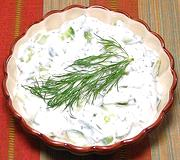

|
Cucumber & Yogurt SaladArmenia - Jajek | Turkey - Çacik | Greece - Tzatziki | ||||
| Serves: Effort: Sched: DoAhead: |
4 salad * 2 hrs Part |
Versions of this salad are enjoyed through Greece (Greek Version), Anatolia, Caucasus, Western Asia and India (Indian version). | |||
|
1-1/4 1/2 2 1 2 |
# t c cl T |
Cucumbers (1) Salt Yogurt (2) Garlic Mint, fresh alt. Dill |
Turks and Armenians usually season with mint, which which may be fresh, but usually dried for Turks. Here in Southern California we almost always use fresh mint and dill. Make: - (2 hrs - 20 min work)
|